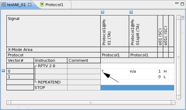
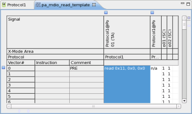

Reconstructing transaction signals
About this task
This task describes how to reconstruct transactions from vectors of simulated patterns or non protocol patterns.
Before you begin
Ensure you have loaded your device and all setups components including the corresponding protocol, refer to Loading a testflow and all setup components.
Ensure the current layout of your Pattern Editor shows transaction (TA) signals, refer to Configuring the layout of the Pattern Editor.
Procedure
Results
The result of this task can either reconstruct a transaction signal or not.
Transaction signal could not be reconstructed
In this case the Pattern Editor displays a '?'.

This means only that the parser could not find a sequence that matches the selected protocol's transaction.
Transaction signal reconstructed
In this case the corresponding transaction is shown along with the values for each parameter.

Functional changes
- Introduced in SmarTest 7.1.0